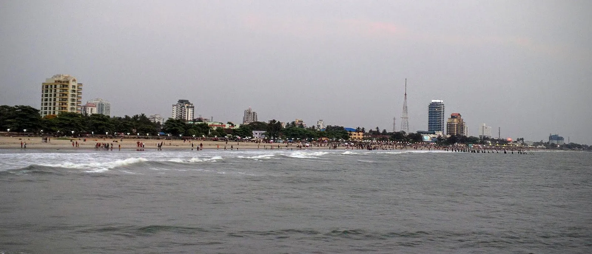
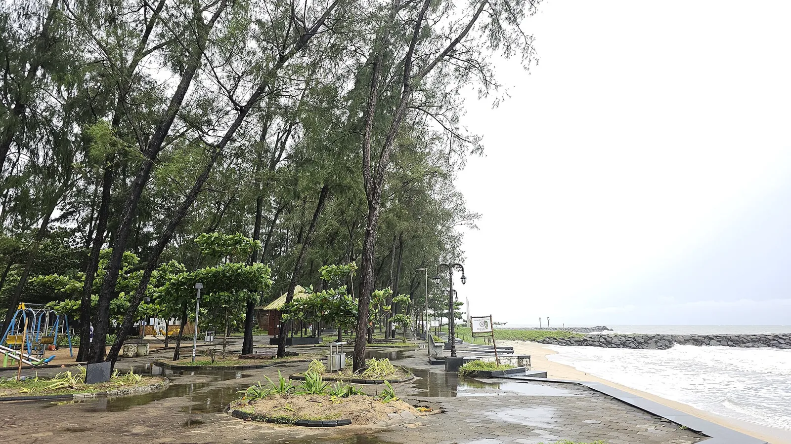
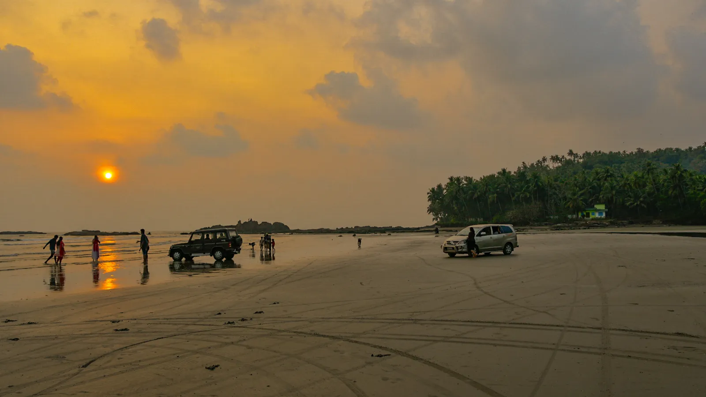
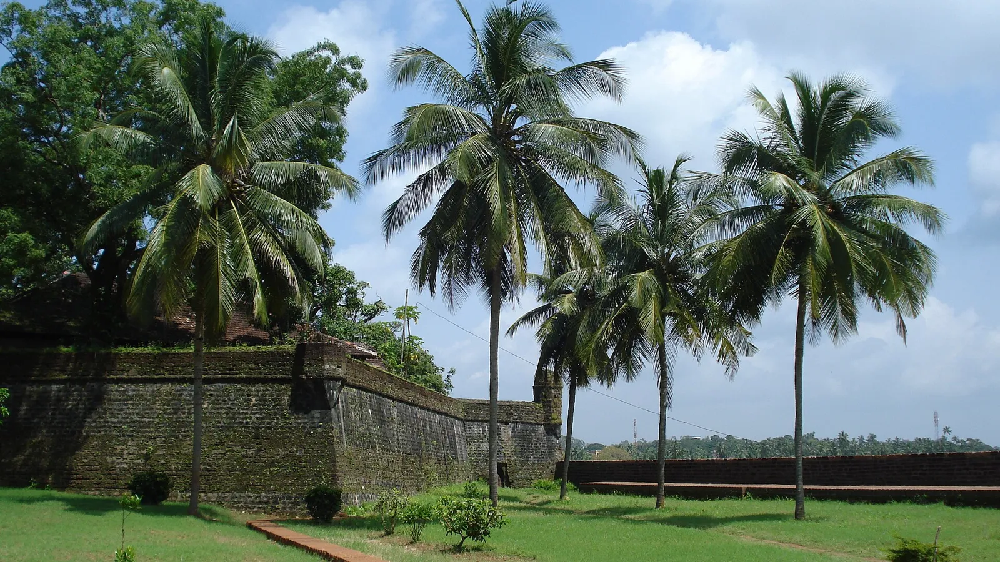
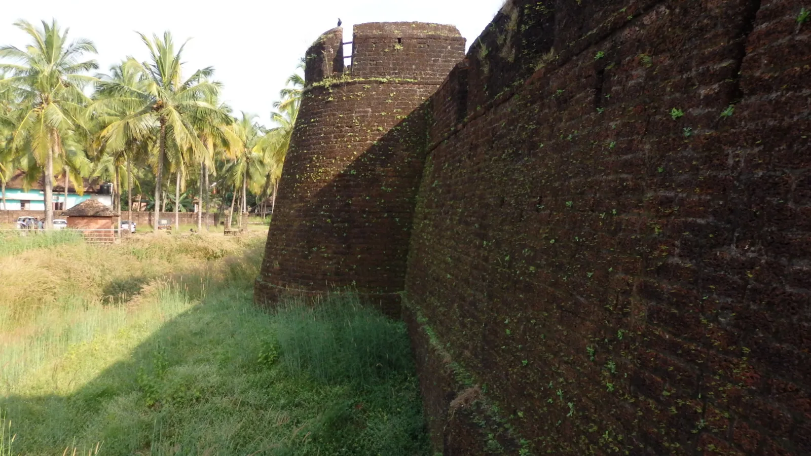
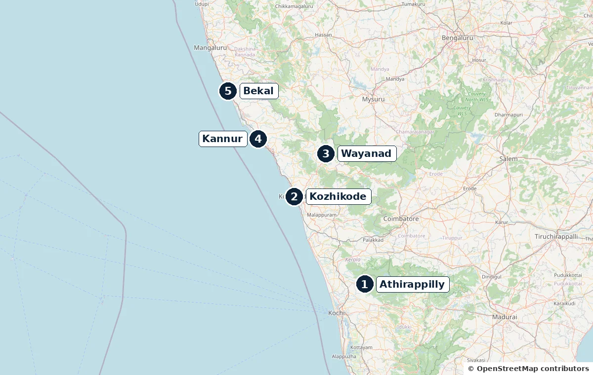

Most visitors to Kerala never go north of Kochi. This one-way route runs up the Malabar coast from Kochi airport to Mangaluru: India's widest waterfall at Athirappilly, the spice port of Kozhikode where Vasco da Gama landed, two nights in the green hills of Wayanad, the Theyyam ritual country around Kannur and the sea fort of Bekal. Drives are short, and there is no need to double back.
See it for yourself
Photos from the journey








Where you go
The journey on one map

Kochi AirportAthirappillyKozhikodeWayanadKannurBekalMangaluru Airport
Day by day, in short
Daily travel brief
Distances are by road for the whole day. The full plan with timings comes with your detailed itinerary.
-
1
Land in Kochi and drive to Athirappilly Falls
- Athirappilly Falls: rocks near the water are slippery.
- Hornbills are often seen along the Vazhachal road early in the morning.
-
2
Up the coast to Kozhikode
- Drive north: most Kerala temples admit Hindus only.
- Kozhikode cooking is mostly non-vegetarian.
-
3
Kappad beach and up the ghat to Wayanad
- Weekend traffic on the ghat can add an hour.
-
4
Edakkal Caves, Banasura Sagar and Pookode Lake
Wayanad Heritage Museum Banasura Sagar Dam
- Edakkal Caves: open about 09:00 to 16:00 and closed on Mondays.
- Edakkal Caves: not suitable for people with knee or heart problems.
-
5
Down to Kannur and the drive-in beach
- Theyyam: this is worship, not a show.
- Theyyam often starts late at night and runs till dawn.
-
6
North to Bekal
- Bekal's resorts are on the Kappil and Pallikere beaches, quieter than any in south Kerala.
-
7
Bekal Fort and Kappil beach
- Bekal Fort: go before 10:00 for softer light and fewer people.
- Swim only where the resort says it is safe.
-
8
Bekal to Mangaluru airport
- Drive to Mangaluru: leave 4 hours before your flight.
- Mangaluru also has trains to Mumbai and Goa if you would rather go by rail.
Local know-how
Travel hacks from our desk
UPI, cards and cash
UPI works almost everywhere, even at small stalls. Keep some cash in INR 100 and 200 notes for temples, parking, tips and places where the network is weak.
Temple and shrine etiquette
Cover shoulders and knees. Remove shoes where asked, and carry socks for hot stone floors. Leather belts and bags are not allowed inside some Jain and Hindu temples. Ask before photographing people and inside shrines.
Water and street food
Drink sealed bottled or filtered water only. Choose busy stalls where food is cooked in front of you, and skip cut fruit and ice from roadside stalls.
Driving times
Indian roads are slower than the kilometres suggest: plan on 40 to 50 km an hour on highways and much less in hills and towns. Your driver's breaks and meal stops are built into the timings.
Plugs and tipping
Plugs are Indian three-pin and two-pin, 230 volts. Tipping drivers and guides about INR 300 to 500 a day is appreciated.
When to go
Best time to visit for this journey
December to February, during Theyyam season in Kannur.
October to March: dry, green and about 22° to 32°. Theyyam season runs from about November to May. The monsoon (June to September) is lush but rough at sea, and ghat roads see landslides.
The package
What's included
Included
- 7 nights in the resorts listed or similar
- Daily breakfast
- Private air-conditioned car from Kochi to Mangaluru
- 24/7 support from Blue Diamond Voyage
Not included
- Flights
- Entry fees, boating and cave tickets
- Theyyam offerings
- Lunches and dinners
- Travel insurance
The detailed itinerary
Some journeys are planned. Ours are crafted.
The full 8-day plan is ready: hour-by-hour timings, drive times, temple dress codes, food for your diet and a route map for every day. Tell us your dates and your city, and we'll send it to you on WhatsApp, shaped around you.
- Hour-by-hour timings
- A route map for every day
- Hotel and room details
- Visa and entry steps
- Vegetarian and Jain dining
24/7 travel desk+91 97148 59797+91 98242 21400
Photo and map credits
- Athirappilly Falls: Pranchiyettan, CC BY-SA 3.0, via Wikimedia Commons
- Kozhikode Beach: Sulyab Thottungal, CC BY-SA 4.0, via Wikimedia Commons
- Kappad Beach: Gannu03, CC BY-SA 4.0, via Wikimedia Commons
- Edakkal Caves: Ingo Mehling, CC BY-SA 4.0, via Wikimedia Commons
- Muzhappilangad Drive-in Beach: Shagil Kannur, CC BY 3.0, via Wikimedia Commons
- St. Angelo Fort Kannur: Rajesh Kakkanatt, CC BY-SA 3.0, via Wikimedia Commons
- Bekal Fort: Phadke09, CC BY-SA 4.0, via Wikimedia Commons
- Mangalore International Airport: Premnath Kudva, CC BY-SA 3.0, via Wikimedia Commons
- Maps: © OpenStreetMap contributors; road routes by OSRM.